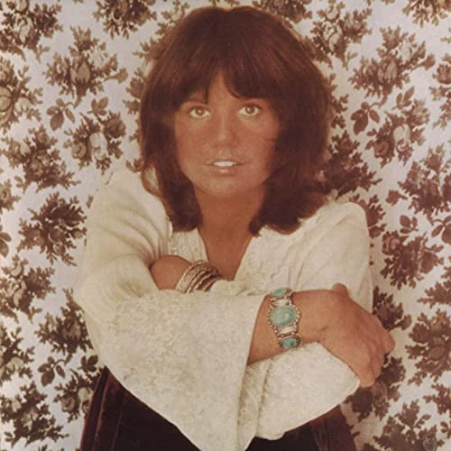
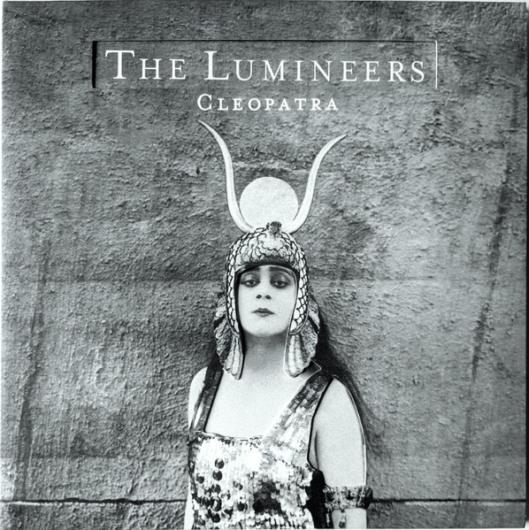
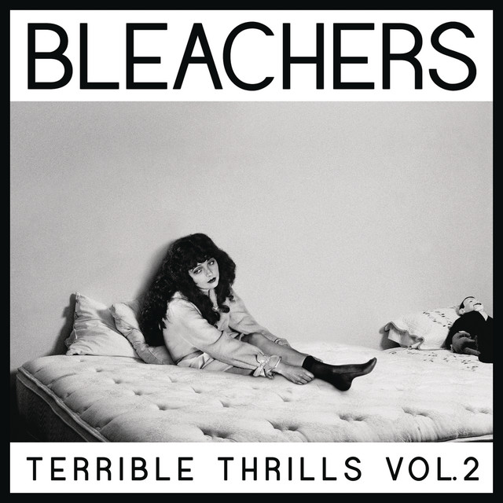

welcome to my music and photo gallery! if you hover over the polaroid, you can see when i first heard that song. i tried to incorporate different music tastes. it's definetly a work in progress, but i think that it's pretty adequate as of right now. maybe i'll do something where if you click the polaroid it will start playing the song. that would mean i need some audio stuff. if you have any music recommentations, email them to atjarkse@purdue.edu. otherwise, enjoy the gallery!
@thereal_adubs sent me this song in december of 2021 i think. it's a good song and it's been my favorite for quite a few months now.
linger the cranberries
mr lubliner played us this to prep for 'all the pretty horses' (since john grady cole is a desperado) and i haven't gotten it out of my mind since.

desperado linda ronstadt
this was played in the car with eva and andy directly after the gary indiana nonsense. i really like the way that it sounds.
record player daisy the great
my mom always played this in the car when i was little on the way back from sunday school and say how it was an all girl band.
manic monday the bangles
this one is very famous, i'm not sure where i heard it first.
motion sickness phoebe bridgers
ashwin's favorite song; he knows every word, and never sang it at the lunch concert, but he did sing it on waukegan road in the car this summer.
all too well taylor swift
this is from the prom scene in episode one of freaks and geeks, but more notably, casey sings it every time we go sailing.
come sail away styx
this was playing while me and eva and chloe were on the trampoline during common app mania. even though we know how that turned, out it was still a nice memory.

ophelia the lumineers
ciara carroll sang this in the talent show sophomore year. she sounded better than the stokes.
last night the stokes
grant showed me this song first, and andy later stole it from him. but i know it's grant's because he shouts SUMMER!! when it comes on.

rollercoaster the bleachers
another gita classic, this one was from feed my starving children and she started singing like a lunatic.
karma chameleon culture club
meteor shower is a tiktok song, but i first heard it in instagram reals. the part about sapphire stones is very pretty and so is the rest.